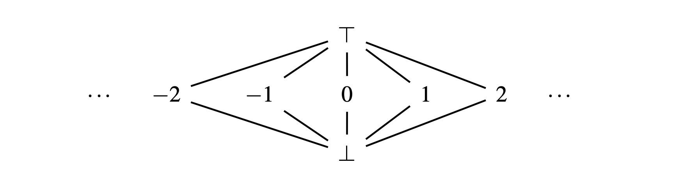
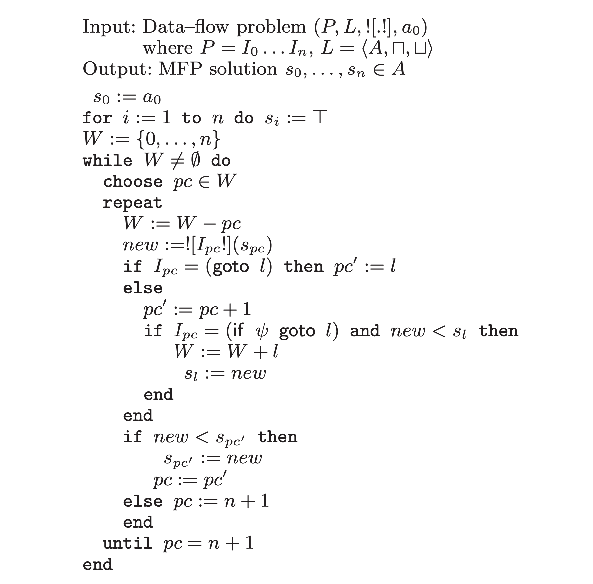
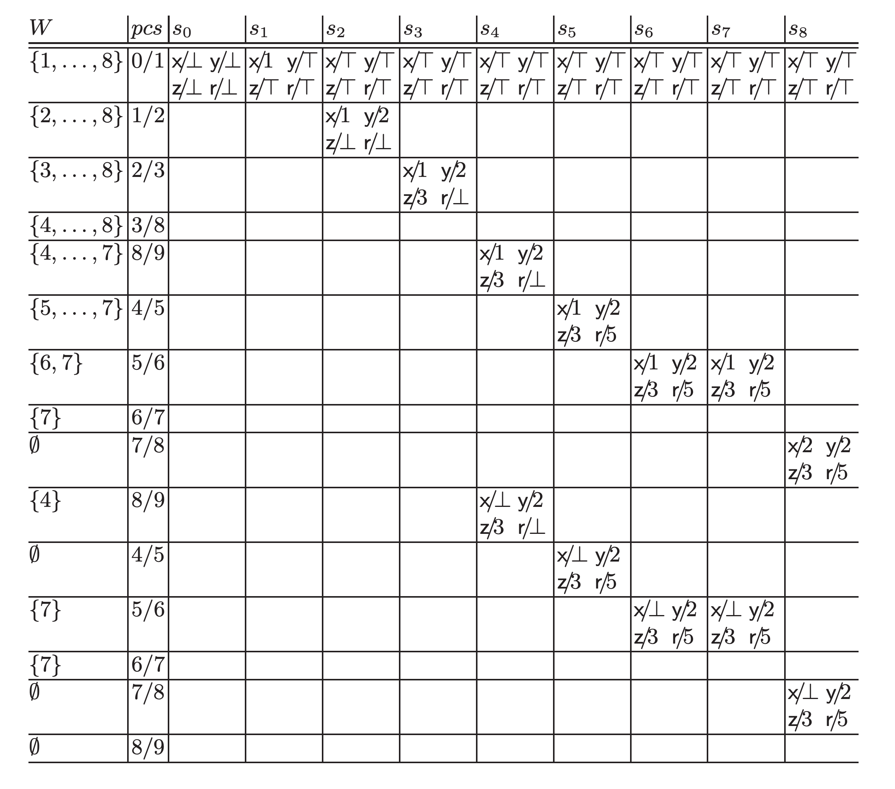

In this article we'll try to understand and implement a part of Julia's inference algorithm. The technique is commonly called as "abstract interpretation" or "data-flow analysis" of a program, which is generally used for program analysis, and so I hope even those who aren't especially interested in Julia may find this interesting.
In this article we're going to pick up constant folding propagation as an example data-flow analysis problem, and actually implement it from scratch using Julia. While constant folding propagation is one of the most common compiler optimization technique, the understanding can be easily generalized and the example implementation will help you figure out how Julia's inference routine works.
In this section we will briefly introduce some notations to describe a general data-flow analysis and consider the example problem (constant folding propagation), and finally understand an algorithm to solve it.
A data-flow problem is defined by the following 4 components:
\(P = I_0 ... I_n \in \text{Instr}\): a program, which consists of "instructions"
\(L = < A, \sqcup, \sqcap >\) : lattice of abstract state that represents some property of \(P\)
\(![.!] : \text{Instr} \rightarrow (A \rightarrow A)\): "abstract semantics" of \(P\), which gives how each instruction acts on \(P\)'s abstract state \(A\)
\(a_0 \in A\): initial state of \(P\)
where:
\(\text{Instr}\): basic instructions that make up a program; we can think of any kind of instruction as far as we can distinguish between instructions that cause the control flow to branch and those which keep the control flow linear
\(A\): set that represents program's state[1]
\(\sqcup, \sqcap\): operations corresponding to join and meet respectively, that acts on \(A\)
The actual and concrete definitions of \(P\), \(L\), and \(![.!]\) are given for each data-flow problem.
Muchnick, S.S. and Jones, N.D., 1981. Program flow analysis: Theory and applications (Vol. 196) proposed an algorithm that uses a graph that has nodes of basic blocks ("BB graph") as a core data structure, and it had been the de facto standard algorithm to solve a data-flow problem.
Mohnen, M., 2002, April. A graph-free approach to data-flow analysis extended that algorithm so that it doesn't use a graph as an explicit data structure.
It experimentally showed that the "graph-free" approach has the following benefits:
improved memory efficiency: in many cases, it's able to reduce the memory usage by a third, at the cost of negligible execution time trade-offs
easy to implement: it no longer needs to build a BB graph
To help us understand the algorithm proposed in the paper, let's introduce an example data-flow problem first.
This article picks up constant folding propagation as an example data-flow problem. It is a common compiler optimization technique that aims at finding as many constants as possible at compile time, and replacing the runtime computations with the constant values. So the data-flow problem for that is setup up such that it determines if a variable is constant or not at each point of the program.
Let's get started with defining 1.) program \(P\), 2.) lattice \(L\), 3.) abstract semantics \(![.!]\), and 4.) the initial state \(a_0\).
For the sake of simplicity, we will assume that the program \(P\) only performs operations on integers and there're only three types of instruction:
assignment: lhs := rhs
unconditional branching: goto instruction
conditional branching: condition && goto instruction
Let \(C\) to be an abstract value that represents each variable's property. For constant folding prop', we only need to consider the following three kinds of \(C\):
\(\top\): the top element of lattice
\(c \in \mathbb{N}\): constant
\(\bot\): the bottom element of lattice
The paper gave intuitive meanings of \(\top\) and \(\bot\) as follows:
\(\top\): "non constant due to missing information"
\(\bot\): "non constant due to conflict"
Next, we define the ordering of \(C\) as follows: \(c_1 \le c_2\) iff a) \(c_1 = c_2\), b) \(c_1 = \bot\), c) \(c_2 = \top\)
So \(C\) forms the flat lattice as shown in the following image: 
The abstract state \(A\) for each instruction of \(P\) can be represented as the following map, where \(X\) is the set of variables in \(P\):
\[ A := X \rightarrow C \]Finally, we can think of meet and join operations on abstract state \(A\) (\(\sqcap_A\), \(\sqcup_A\)) as the per-variable uses of corresponding operation on abstract value \(C\).
Let's consider the abstract semantics \(![.!]\) of program \(P\). Each instruction of \(P\) has the following effect on abstract state:
assignment (lhs := rhs): assigns rhs to lhs only when rhs is known to be constant, otherwise assign \(\bot\) to lhs
unconditional branching (goto instruction): doesn't change the abstract state
conditional branching (condition && goto instruction): doesn't change the abstract state
While the paper explains that the initial state of program in constant folding prop' problem should be initialized with \(\bot\), it's probably wrong. Rather, \(P\) should be initialized with \(\top\) for this problem; Intuitively, at the initial state, each variable in \(P\) should be interpreted as "non constant due to missing information" rather than "non constant due to conflict".
\[ a_0 := X \rightarrow \top \]Now we've set up the data-flow problem. The paper proposed the following algorithm to solve it: [2]

Intuitive understandings of this algorithm are:
the program itself acts on its abstract state at instruction level via abstract semantics \(![.!]\)
the algorithm works by updating the current program counter \(pc\), which corresponds to the current instruction \(I_{pc}\), and the working set \(W\), which holds the rest of the instructions to be computed
the abstract state of the current instruction \(I_{pc}\) propagates to states of all the instructions that \(I_{pc}\) may reach
however, the abstract state of the current instruction \(I_{pc}\) propagates only if it "changes" the abstract state of an instruction to which it propagates
3. corresponds to \(I_{pc} = (\text{if} \psi \text{goto} l)\) in the algorithm. This means, the algorithm accounts for both branches at the conditional branching, unlike the actual program execution.
4. corresponds to \(\text{if} new < s_{pc'}\) and \(\text{if} new < s_{l}\) in the algorithm. The paper uses the ordering relation \(<\) of the abstract state \(A\) in the lattice \(L\) as the condition to check whether or not the abstract state of the current instruction "changes" the abstract state of an instruction to which it propagates. In other word, if \(new < s_{pc'}\) doesn't hold we consider the abstract state has "converged" (and finally the algorithm will terminate after all the abstract states for each instruction have converged). The paper also explains that the ordering relation \(<\) is equivalent to the following condition:
\[ new < s_{pc'} \equiv (new \sqcap s_{pc'} = new) \land (new \ne s_{pc'}) \]That is, \(new\) (abstract state of the current instruction \(I_{pc}\)) is propagated to \(s_{pc'}\) (abstract state of the next instruction \(I_{pc'}\)) only when \(new\) is lower than \(s_{pc'}\) in the lattice \(L\)[3]. Thus, the abstract state \(A\) for each instruction is always updated in a way that it transitions towards the bottom of \(L\), so that this algorithm will always converge given lattice \(L\) with finite height.
prog0 and example algorithm tracingAs an concrete example of the program \(P\), suppose we have the following program prog0:
0 ─ I₀ = x := 1
│ I₁ = y := 2
│ I₂ = z := 3
└── I₃ = goto I₈
1 ─ I₄ = r := y + z
└── I₅ = if x ≤ z goto I₇
2 ─ I₆ = r := z + y
3 ─ I₇ = x := x + 1
4 ─ I₈ = if x < 10 goto I₄prog0(The leftmost numbers correspond to basic blocks. They're not used by the algorithm presented in this article.)
The paper shows the following tables as the example tracing of the algorithm running on prog0: 
@prog0We can see that at the final state \(s_8\) (\(\text{x}/\bot \text{y}/2 \text{z}/3 \text{r}/5\)), the algorithm obtains the information that "r is a constant 5", which doesn't appear in prog0.
Phew, such a long preface. Now let's express the data-flow problem and implement the algorithm using Julia ! As in the previous section, we first setup the problem, and then tackle the algorithm. The full code can be found at https://github.com/aviatesk/aviatesk.github.io/blob/main/posts/data-flow-problem/assets/dataflow.jl.
abstract type Exp end
struct Sym <: Exp
name::Symbol
end
struct Num <: Exp
val::Int
end
struct Call <: Exp
head::Sym
args::Vector{Exp}
end
abstract type Instr end
struct Assign <: Instr
lhs::Sym
rhs::Exp
end
struct Goto <: Instr
label::Int
end
struct GotoIf <: Instr
label::Int
cond::Exp
end
const Program = Vector{Instr}Vector{Instr} (alias for Array{Instr, 1})Now we will express the abstract state \(A := X \rightarrow C\) of an instruction that composes program \(P\).
First, we define \(C\), abstract value that a variable \(X\) can have, and their order:
# partial order, meet, join, top, bottom, and their identities
import Base: ≤, ==, <, show
abstract type LatticeElement end
struct Const <: LatticeElement
val::Int
end
struct TopElement <: LatticeElement end
struct BotElement <: LatticeElement end
const ⊤ = TopElement()
const ⊥ = BotElement()
show(io::IO, ::TopElement) = print(io, '⊤')
show(io::IO, ::BotElement) = print(io, '⊥')
≤(x::LatticeElement, y::LatticeElement) = x≡y
≤(::BotElement, ::TopElement) = true
≤(::BotElement, ::LatticeElement) = true
≤(::LatticeElement, ::TopElement) = true
# NOTE: == and < are defined such that future LatticeElements only need to implement ≤
==(x::LatticeElement, y::LatticeElement) = x≤y && y≤x
<(x::LatticeElement, y::LatticeElement) = x≤y && !(y≤x)
# join
⊔(x::LatticeElement, y::LatticeElement) = x≤y ? y : y≤x ? x : ⊤
# meet
⊓(x::LatticeElement, y::LatticeElement) = x≤y ? x : y≤x ? y : ⊥⊓ (generic function with 1 method)Next, let's represent abstract state \(A\) as map from variable \(X\) to its abstract value \(C\), and define its ordering relation \(<\):
# NOTE: the paper (https://api.semanticscholar.org/CorpusID:28519618) uses U+1D56E MATHEMATICAL BOLD FRAKTUR CAPITAL C for this
const AbstractState = Dict{Symbol,LatticeElement}
# extend lattices of abstract values to lattices of mappings of variables to abstract values;
# ⊓ and ⊔ operate pair-wise, and from there we can just rely on the Base implementation for
# dictionary equality comparison
⊔(X::AbstractState, Y::AbstractState) = AbstractState( v => X[v] ⊔ Y[v] for v in keys(X) )
⊓(X::AbstractState, Y::AbstractState) = AbstractState( v => X[v] ⊓ Y[v] for v in keys(X) )
<(X::AbstractState, Y::AbstractState) = X⊓Y==X && X≠Y< (generic function with 77 methods)Abstract semantics \(![.!]\) can be easily implemented using Julia's actual code execution. We can use getfield and easily retrieve the actual arithmetic function from head::Symbol field of Call object.
abstract_eval(x::Num, s::AbstractState) = Const(x.val)
abstract_eval(x::Sym, s::AbstractState) = get(s, x.name, ⊥)
function abstract_eval(x::Call, s::AbstractState)
f = getfield(@__MODULE__, x.head.name)
argvals = Int[]
for arg in x.args
arg = abstract_eval(arg, s)
arg === ⊥ && return ⊥ # bail out if any of call arguments is non-constant
push!(argvals, unwrap_val(arg))
end
return Const(f(argvals...))
end
# unwrap our lattice representation into actual Julia value
unwrap_val(x::Num) = x.val
unwrap_val(x::Const) = x.valunwrap_val (generic function with 2 methods)As explained in the previous section, we modify the example in the article and initialize \(a_0\) with \(\top\):
a₀ = AbstractState(:x => ⊤, :y => ⊤, :z => ⊤, :r => ⊤)Dict{Symbol, LatticeElement} with 4 entries:
:y => ⊤
:z => ⊤
:r => ⊤
:x => ⊤prog0Before implementing the algorithm, let's represent the example program prog0 first.
An naive representation would look like this:
prog0 = [Assign(Sym(:x), Num(1)), # I₀
Assign(Sym(:y), Num(2)), # I₁
Assign(Sym(:z), Num(3)), # I₂
Goto(8), # I₃
Assign(Sym(:r), Call(Sym(:(+)), [Sym(:y), Sym(:z)])), # I₄
GotoIf(7, Call(Sym(:(≤)), [Sym(:x), Sym(:z)])), # I₅
Assign(Sym(:r), Call(Sym(:(+)), [Sym(:z), Sym(:y)])), # I₆
Assign(Sym(:x), Call(Sym(:(+)), [Sym(:x), Num(1)])), # I₇
GotoIf(4, Call(Sym(:(<)), [Sym(:x), Num(10)])), # I₈
]::Program9-element Vector{Instr}:
Assign(Sym(:x), Num(1))
Assign(Sym(:y), Num(2))
Assign(Sym(:z), Num(3))
Goto(8)
Assign(Sym(:r), Call(Sym(:+), Exp[Sym(:y), Sym(:z)]))
GotoIf(7, Call(Sym(:≤), Exp[Sym(:x), Sym(:z)]))
Assign(Sym(:r), Call(Sym(:+), Exp[Sym(:z), Sym(:y)]))
Assign(Sym(:x), Call(Sym(:+), Exp[Sym(:x), Num(1)]))
GotoIf(4, Call(Sym(:<), Exp[Sym(:x), Num(10)]))Hm, it's a little clumsy. So, let's write a macro @prog that generates our target instruction-level problem \(P\) from Julia syntax, using Julia's powerful meta-programming features[4]. We'll use MacroTools.jl, a package for pattern-matching on Julia's surface syntax AST.
using MacroTools
macro prog(blk)
Instr[Instr(x) for x in filter(!islnn, blk.args)]::Program
end
function Instr(x)
if @capture(x, lhs_ = rhs_) # => Assign
Assign(Instr(lhs), Instr(rhs))
elseif @capture(x, @goto label_) # => Goto
Goto(label)
elseif @capture(x, cond_ && @goto label_) # => GotoIf
GotoIf(label, Instr(cond))
elseif @capture(x, f_(args__)) # => Call
Call(Instr(f), Instr.(args))
elseif isa(x, Symbol) # => Sym
Sym(x)
elseif isa(x, Int) # => Num
Num(x)
else
error("invalid expression: $(x)")
end
end
islnn(@nospecialize(_)) = false
islnn(::LineNumberNode) = trueislnn (generic function with 2 methods)Now we can generate \(P\) directly from Julia's nice syntax :-)
prog0 = @prog begin
x = 1 # I₀
y = 2 # I₁
z = 3 # I₂
@goto 8 # I₃
r = y + z # I₄
x ≤ z && @goto 7 # I₅
r = z + y # I₆
x = x + 1 # I₇
x < 10 && @goto 4 # I₈
end9-element Vector{Instr}:
Assign(Sym(:x), Num(1))
Assign(Sym(:y), Num(2))
Assign(Sym(:z), Num(3))
Goto(8)
Assign(Sym(:r), Call(Sym(:+), Exp[Sym(:y), Sym(:z)]))
GotoIf(7, Call(Sym(:≤), Exp[Sym(:x), Sym(:z)]))
Assign(Sym(:r), Call(Sym(:+), Exp[Sym(:z), Sym(:y)]))
Assign(Sym(:x), Call(Sym(:+), Exp[Sym(:x), Num(1)]))
GotoIf(4, Call(Sym(:<), Exp[Sym(:x), Num(10)]))Okay, it's time to implement the main algorithm. If we try to implement it faithfully according to the paper, it would look like this:
function max_fixed_point(prog::Program, a₀::AbstractState, eval)
n = length(prog)
init = AbstractState( v => ⊤ for v in keys(a₀) )
s = [ a₀; [ init for i = 2:n ] ]
W = BitSet(0:n-1)
while !isempty(W)
pc = first(W)
while pc ≠ n
delete!(W, pc)
I = prog[pc+1]
new = s[pc+1]
if isa(I, Assign)
# for an assignment, outgoing value is different from incoming
new = copy(new)
new[I.lhs.name] = eval(I.rhs, new)
end
if isa(I, Goto)
pc´ = I.label
else
pc´ = pc+1
if isa(I, GotoIf)
l = I.label
if new < s[l+1]
push!(W, l)
s[l+1] = new
end
end
end
if pc´≤n-1 && new < s[pc´+1]
s[pc´+1] = new
pc = pc´
else
pc = n
end
end
end
return s
endmax_fixed_point (generic function with 1 method)Note that in this article we're trying to express things in the same way as the paper as possible, and so here we've adjusted the paper's 0-based indexing so that it fits with Julia's 1-based indexing as s[pc´+1] and so on.
Now we're good to go, let's run it on prog0 !
max_fixed_point(prog0, a₀, abstract_eval)9-element Vector{Dict{Symbol, LatticeElement}}:
Dict(:y => ⊤, :z => ⊤, :r => ⊤, :x => ⊤)
Dict(:y => ⊤, :z => ⊤, :r => ⊤, :x => Const(1))
Dict(:y => Const(2), :z => ⊤, :r => ⊤, :x => Const(1))
Dict(:y => Const(2), :z => Const(3), :r => ⊤, :x => Const(1))
Dict(:y => Const(2), :z => Const(3), :r => ⊤, :x => Const(1))
Dict(:y => Const(2), :z => Const(3), :r => Const(5), :x => Const(1))
Dict(:y => Const(2), :z => Const(3), :r => Const(5), :x => Const(1))
Dict(:y => Const(2), :z => Const(3), :r => Const(5), :x => Const(1))
Dict(:y => Const(2), :z => Const(3), :r => ⊤, :x => Const(1))... Hmm ? The result is different from the paper's tracing example. See the last line Dict(:y => Const(2), :z => Const(3), :r => ⊤, :x => Const(1)), which corresponds to \(s_8\) in the tracing example, and there's no longer any information that indicates r is a constant 5 at that point.
To say the conclusion first, this is in fact because the paper's original algorithm is partially wrong[5]. Let's take a close look.
Actually, the tracing example from the paper is incomplete. If we run the algorithm, at the cell at the 5th row from the top and 11th column from the left, which is blank in the original table, \(s_3\) (the state of I₃ = goto I₈) should have propagated to \(s_8\) (the state of I₈ = if x < 10 goto I₄), and so the cell should have been \(s_8 := \text{x}/1 \text{y}/2 \text{z}/3 \text{r}/\top\). Then at the cell at 11th row from the top and 10th column from the left, \(s_8 < s_7\) no longer holds, and thus \(s_7\) (the state of I₇ = x := x + 1) won't be propagated to \(s_8\) and \(W\) will be emptied, and consequently, the algorithm will terminate at that point.
Since the implementation above faithfully follows the paper, it terminated as exactly described above (i.e. new < s[pc´+1] didn't returns true when new is \(s_7\)). Now we're in trouble ...
The problem with the paper's algorithm is that, to put it simply, the states can't propagate well if we use strict ordering relation between abstract states (3) to determine whether or not the abstract state of the current instruction changes an abstract state to which it propagates.
In this particular case, while the ordering relation new < s[pc´+1] doesn't hold when new is \(s_7\) (abstract state of the current instruction \(I_7\), \(\text{x}/2 \text{y}/2 \text{z}/3 \text{r}/5\)) and s[pc´+1] is \(s_8\) (abstract state of the next instruction \(I_8\), \(\text{x}/1 \text{y}/2 \text{z}/3 \text{r}/\top\)), but we still want to propagate new (\(s_7\)) to s[pc´+1] (\(s_8\)) and update s[pc´+1] to such an new state that \(s_8 := \text{x}/\bot \text{y}/2 \text{z}/3 \text{r}/5\).
Therefore, we want to fix the original algorithm so that:
it propagates changes of the current instruction's state \(new\) to the next instruction's state \(s_{pc'}\), without using their strict ordering relation \(new < s_{pc'} \equiv (new \sqcap s_{pc'} = new) \land (new \ne s_{pc'})\) (3)
on the other hand, in order to keep the convergence of the algorithm, changes of \(new\) should be propagated in a way that the new state always is lower in the lattice \(L\) than the previous state
We can put them into code as follows:
use the "equivalence" of abstract state to determine whether or not the abstract state of the current instruction changes an abstract state to which it propagates
use ⊓ (meet, computes maximum lower bound) to update abstract state, to make sure that the updated abstract state will be lower in \(L\) than the previous state.
So, let's apply the following diff to max_fixed_point:
--- a/dataflow.jl
+++ b/dataflow.jl
@@ -156,14 +156,14 @@ function max_fixed_point(prog::Program, a₀::AbstractState, eval)
pc´ = pc+1
if isa(I, GotoIf)
l = I.label
- if new < s[l+1]
+ if new ≠ s[l+1]
push!(W, l)
- s[l+1] = new
+ s[l+1] = new ⊓ s[l+1]
end
end
end
- if pc´≤n-1 && new < s[pc´+1]
- s[pc´+1] = new
+ if pc´≤n-1 && new ≠ s[pc´+1]
+ s[pc´+1] = new ⊓ s[pc´+1]
pc = pc´
else
pc = nLet's try the modified version of the algorithm:
# NOTE: in this problem, we make sure that states will always move to _lower_ position in lattice, so
# - initialize states with `⊤`
# - we use `⊓` (meet) operator to update states,
# - and the condition we use to check whether or not the statement makes a change is `new ≠ prev`
function max_fixed_point(prog::Program, a₀::AbstractState, eval)
n = length(prog)
init = AbstractState( v => ⊤ for v in keys(a₀) )
s = [ a₀; [ init for i = 2:n ] ]
W = BitSet(0:n-1)
while !isempty(W)
pc = first(W)
while pc ≠ n
delete!(W, pc)
I = prog[pc+1]
new = s[pc+1]
if isa(I, Assign)
# for an assignment, outgoing value is different from incoming
new = copy(new)
new[I.lhs.name] = eval(I.rhs, new)
end
if isa(I, Goto)
pc´ = I.label
else
pc´ = pc+1
if isa(I, GotoIf)
l = I.label
if new ≠ s[l+1]
push!(W, l)
s[l+1] = new ⊓ s[l+1]
end
end
end
if pc´≤n-1 && new ≠ s[pc´+1]
s[pc´+1] = new ⊓ s[pc´+1]
pc = pc´
else
pc = n
end
end
end
return s
end
max_fixed_point(prog0, a₀, abstract_eval) # The solution contains the `:r => Const(5)`, which is not found in the program9-element Vector{Dict{Symbol, LatticeElement}}:
Dict(:y => ⊤, :z => ⊤, :r => ⊤, :x => ⊤)
Dict(:y => ⊤, :z => ⊤, :r => ⊤, :x => Const(1))
Dict(:y => Const(2), :z => ⊤, :r => ⊤, :x => Const(1))
Dict(:y => Const(2), :z => Const(3), :r => ⊤, :x => Const(1))
Dict(:y => Const(2), :z => Const(3), :r => Const(5), :x => ⊥)
Dict(:y => Const(2), :z => Const(3), :r => Const(5), :x => ⊥)
Dict(:y => Const(2), :z => Const(3), :r => Const(5), :x => ⊥)
Dict(:y => Const(2), :z => Const(3), :r => Const(5), :x => ⊥)
Dict(:y => Const(2), :z => Const(3), :r => Const(5), :x => ⊥)Hooray ! Splendidly, the algorithm's returned Dict(:y => Const(2), :z => Const(3), :r => Const(5), :x => ⊥), which corresponds to \(s_8\), and now we know r is a constant 5 correctly.
By the way, Julia's type inference consists of two major parts:
part 1. local inference within the scope of a function
part 2. inter-procedural inference across function calls
The part 1 is the core subroutine of Julia's type inference and is based on the algorithm proposed in Mohnen, M., 2002, April. A graph-free approach to data-flow analysis, that now we know how it works. The part 2 extends it so that the inference still converges even when it recurs into a function calls in the inter-procedural way (even if there is mutual recursive calls, etc.). This article won't go any further on the part 2, please refer to Jeff Bezanson's Ph.D. thesis or Jameson Nash's blog post for details if interested.
So we may be interested in if Julia’s type inference also modifies the paper's original algorithm as well as this article. For example, does it work for prog0 correctly ?
Julia's type inference routine uses data-flow analysis to type-annotate your Julia code in order to generate efficient code. It actually does constant prop' to improve the accuracy of inference. So if Julia's type inference routine works correctly, it should reveal that r in prog0 is a constant 5.
Let's create Julia code corresponding to prog0 and run type inference on it. We can express prog0 as Julia code using @label macro:
begin
begin
@label I₀
x = 1
end
...
begin
@label I₅
x ≤ z && @goto I₇
end
...
endAgain, it's a bit ugly, so let's define @prog′ macro that generates valid Julia code from our \(P = I_0 ... I_n \in \text{Instr}\) notations (i.e. the syntax @prog works on):
# generate valid Julia code from the "`Instr` syntax"
macro prog′(blk)
prog′ = Expr(:block)
bns = [gensym(Symbol(:instruction, i-1)) for i in 1:length(blk.args)] # pre-generate labels for all instructions
for (i,x) in enumerate(filter(!islnn, blk.args))
x = MacroTools.postwalk(x) do x
return if @capture(x, @goto label_)
Expr(:symbolicgoto, bns[label+1]) # fix `@goto i` into valid goto syntax
else
x
end
end
push!(prog′.args, Expr(:block, Expr(:symboliclabel, bns[i]), x)) # label this statement
end
return prog′
end
@macroexpand @prog′ begin
x = 1 # I₀
y = 2 # I₁
z = 3 # I₂
@goto 8 # I₃
r = y + z # I₄
x ≤ z && @goto 7 # I₅
r = z + y # I₆
x = x + 1 # I₇
x < 10 && @goto 4 # I₈
endquote
begin
$(Expr(:symboliclabel, Symbol("#45###instruction0#278")))
var"#57#x" = 1
end
begin
$(Expr(:symboliclabel, Symbol("#46###instruction1#279")))
var"#54#y" = 2
end
begin
$(Expr(:symboliclabel, Symbol("#47###instruction2#280")))
var"#55#z" = 3
end
begin
$(Expr(:symboliclabel, Symbol("#48###instruction3#281")))
$(Expr(:symbolicgoto, Symbol("#49###instruction8#286")))
end
begin
$(Expr(:symboliclabel, Symbol("#50###instruction4#282")))
var"#56#r" = var"#54#y" + var"#55#z"
end
begin
$(Expr(:symboliclabel, Symbol("#51###instruction5#283")))
var"#57#x" ≤ var"#55#z" && $(Expr(:symbolicgoto, Symbol("#52###instruction7#285")))
end
begin
$(Expr(:symboliclabel, Symbol("#53###instruction6#284")))
var"#56#r" = var"#55#z" + var"#54#y"
end
begin
$(Expr(:symboliclabel, Symbol("#52###instruction7#285")))
var"#57#x" = var"#57#x" + 1
end
begin
$(Expr(:symboliclabel, Symbol("#49###instruction8#286")))
var"#57#x" < 10 && $(Expr(:symbolicgoto, Symbol("#50###instruction4#282")))
end
endAs we can see @prog′ nicely generates valid Julia code corresponding to prog0 from our notation :)
Okay, let's check the result of Julia's native type inference using code_typed:
code_typed(; optimize = false) do
@prog′ begin
x = 1 # I₀
y = 2 # I₁
z = 3 # I₂
@goto 8 # I₃
r = y + z # I₄
x ≤ z && @goto 7 # I₅
r = z + y # I₆
x = x + 1 # I₇
x < 10 && @goto 4 # I₈
x, y, z, r # to check the result of abstract interpretation
end
end |> firstCodeInfo(
1 ─ Core.NewvarNode(:(r))::Any
│ (x = 1)::Core.Const(1)
│ (y = 2)::Core.Const(2)
│ (z = 3)::Core.Const(3)
└── goto #6
2 ─ (r = y::Core.Const(2) + z::Core.Const(3))::Core.Const(5)
│ %7 = (x ≤ z::Core.Const(3))::Bool
└── goto #4 if not %7
3 ─ goto #5
4 ─ (r = z::Core.Const(3) + y::Core.Const(2))::Core.Const(5)
5 ┄ (x = x + 1)::Int64
6 ┄ %12 = (x < 10)::Bool
└── goto #8 if not %12
7 ─ goto #2
8 ─ %15 = Core.tuple(x, y::Core.Const(2), z::Core.Const(3), r::Core.Const(5))::Core.PartialStruct(NTuple{4, Int64}, Any[Int64, Core.Const(2), Core.Const(3), Core.Const(5)])
└── return %15
) => NTuple{4, Int64}As seen in the line 8 ─ %15 = Core.tuple(x, y::Core.Const(2), z::Core.Const(3), r::Core.Const(5))::Core.PartialStruct(NTuple{4, Int64}, Any[Int64, Core.Const(2), Core.Const(3), Core.Const(5)]), Julia's data-flow analysis correctly reveals that r is a constant 5 (i.e. r::Core.Const(5) in Julia's internal representation).
If we actually execute prog0, we get the result r == 5 as expected:
@prog′ begin
x = 1 # I₀
y = 2 # I₁
z = 3 # I₂
@goto 8 # I₃
r = y + z # I₄
x ≤ z && @goto 7 # I₅
r = z + y # I₆
x = x + 1 # I₇
x < 10 && @goto 4 # I₈
x, y, z, r # to check the result of actual execution
end(10, 2, 3, 5)So Julia's type inference correctly works on prog0, and now we're interested in how it's different from the original algorithm proposed in the paper. Let's have a quick dive into Julia's type inference implementation.
To help you understand, I'm going to present the parts in Julia's data-flow analysis implementation that correspond to the fixes we've made in this article:
use the "equivalence" of abstract state to determine whether or not the abstract state of the current instruction changes an abstract state to which it propagates
use
⊓(meet, computes maximum lower bound) to update abstract state, to make sure that the updated abstract state will be lower in \(L\) than the previous state.
Please keep in mind that there're two notable differences between our constant folding prop' problem and Julia's type inference:
our constant folding prop' compares abstract state \(A\) to determine the convergence of state, while Julia's type inference compares abstract value \(C\) (, which corresponds to LatticeElement in our implementation)
Julia's type inference and our constant folding prop' works on their own lattice in the opposite directions; unlike our constant folding prop' setup, Julia's type inference transitions abstract value \(C\) from \(\bot\) to \(\top\)[6]
In Julia's type inference implementation, typeinf_local corresponds to the paper's algorithm. Within typeinf_local, abstract states are updated in the following parts:
https://github.com/JuliaLang/julia/tree/f2eb09e5da50128af1f2b20a451dadd3adc991fd/base/compiler/abstractinterpretation.jl#L1316: newstate_else = stupdate!(s[l], changes_else)
https://github.com/JuliaLang/julia/tree/f2eb09e5da50128af1f2b20a451dadd3adc991fd/base/compiler/abstractinterpretation.jl#L1415: newstate = stupdate!(s[pc´], changes)
Here is how stupdate! is implemented:
function stupdate!(state::VarTable, changes::StateUpdate)
if !isa(changes.var, Slot)
return stupdate!(state, changes.state)
end
newstate = false
changeid = slot_id(changes.var::Slot)
for i = 1:length(state)
if i == changeid
newtype = changes.vtype
else
newtype = changes.state[i]
end
oldtype = state[i]
# remove any Conditional for this Slot from the vtable
if isa(newtype, VarState)
newtypetyp = newtype.typ
if isa(newtypetyp, Conditional) && slot_id(newtypetyp.var) == changeid
newtype = VarState(widenconditional(newtypetyp), newtype.undef)
end
end
if schanged(newtype, oldtype)
newstate = state
state[i] = smerge(oldtype, newtype)
end
end
return newstate
end
function stupdate!(state::VarTable, changes::VarTable)
newstate = false
for i = 1:length(state)
newtype = changes[i]
oldtype = state[i]
if schanged(newtype, oldtype)
newstate = state
state[i] = smerge(oldtype, newtype)
end
end
return newstate
endschanged seems to take the role to determine the convergence of abstract value. Let's take a closer look at schanged:
@inline schanged(@nospecialize(n), @nospecialize(o)) = (n !== o) && (o === NOT_FOUND || (n !== NOT_FOUND && !issubstate(n, o)))issubstate(a::VarState, b::VarState) = (a.typ ⊑ b.typ && a.undef <= b.undef)where ⊑ computes the partial order of abstract values in Julia's type lattice.
Comparing to our setup, to update abstract values when schanged(n, o) holds in Julia's type inference corresponds to updating abstract states when !(new ≥ s[pc´+1]) holds (instead of when new < s[pc´+1] holds) in our code[7]. Note that in our setup new is actually never greater than s[pc´+1], thus !(new ≥ s[pc´+1]) essentially equals to new ≠ s[pc´+1].
Well, as I said, schanged works on abstract values rather than abstract states, unlike ≠(::AbstractState, ::AbstractState) in our constant folding prop' setup. But there is no essential difference between them, since our constant folding prop' implementation updates abstract states by variable-wise use of ⊓ and so ≠(::AbstractState, ::AbstractState) returns false only after all abstract values for each variable have converged to their fixed point.
Anyway, we can see Julia's type inference analysis implementation also changes the paper's original convergence condition, and uses !⊑ instead of ⊐ as our max_fixed_point uses ≠ instead of <.
smerge updates abstract value:
function smerge(sa::Union{NotFound,VarState}, sb::Union{NotFound,VarState})
sa === sb && return sa
sa === NOT_FOUND && return sb
sb === NOT_FOUND && return sa
issubstate(sa, sb) && return sb
issubstate(sb, sa) && return sa
return VarState(tmerge(sa.typ, sb.typ), sa.undef | sb.undef)
endAlthough smerge looks a bit involved, tmerge seems to be taking the heavy lifting to update abstract values. Well, tmerge is yet more complex and so I'd like to omit its detail here, but it basically performs the operation that is equivalent to \(\sqcup\) (join), which also corresponds to our fix [8].
After all, Julia's type inference implementation bases on the algorithm proposed in the paper but also it fixes the originally proposed algorithm as we've done for constant folding prop' problem in this article.
In this article, we have implemented the data-flow analysis algorithm proposed in Mohnen, M., 2002, April. A graph-free approach to data-flow analysis, that Julia's type inference routine is based on. While implementing the example data-flow problem, we found some minor (yet super serious !) mistakes in the paper, and we saw there're similar changes done in Julia's type inference implementation; maybe the problems and fixes are only noticed by the readers of this article and the developers of Julia's compiler.
Well, it's the very first time for me to doubt and correct an academic paper; it actually took me a fair amount of time to get to this conclusion. Akira Kawata struggled with the paper together with me and helped me find and fix the problems. I would like to thank him again here.
Cousot, P. and Cousot, R., 1977, January. Abstract interpretation: a unified lattice model for static analysis of programs by construction or approximation of fixpoints. In Proceedings of the 4th ACM SIGACT-SIGPLAN symposium on Principles of programming languages (pp. 238-252).
Muchnick, S.S. and Jones, N.D., 1981. Program flow analysis: Theory and applications (Vol. 196). Englewood Cliffs, New Jersey: Prentice-Hall.
Mohnen, M., 2002, April. A graph-free approach to data-flow analysis. In International Conference on Compiler Construction (pp. 46-61). Springer, Berlin, Heidelberg.
Bezanson, J.W., 2015. Abstraction in technical computing (Doctoral dissertation, Massachusetts Institute of Technology).
Nash, J., 2017. Inference Convergence Algorithm in Julia - Revisited. Julia Computing. [online] juliacomputing.com. Available at: https://juliacomputing.com/blog/2017/05/inference-converage2/ [Accessed 3 November 2020]
| [1] | The paper uses Unicode Character "Lu_1D56E" (U+1D56E) as a symbol for this, but in this article we'll use \(A\) instead of it since the character isn't supported by \(KaTeX\) |
| [2] | Of course this algorithm can be used for general data-flow problems other than the constant folding propagation problem we've setup so far, but note that the initial state and inequalities in the algorithm can be different for each problem. |
| [3] | For conditional branching instruction, \(new\) is propagated to \(s_l\) (abstract state of conditional jump destination instruction) only when \(new\) is lower than \(s_l\) in the the lattice \(L\) |
| [4] | As an alternative, we can overload Base.convert and eliminates uses of constructors of Sym and Num by automatically promoting Symbol to Sym and Int to Num. A resulting code with this approach would look more like the code with our first naive approach to write \(P\) than the code with @prog macro.
|
| [5] | By the way, there is no errata about this ! |
| [6] | Julia's type inference routine works on such a lattice that the more abstract types are at the top and the more concrete types are at the bottom (where the most abstract type is Any and the most concrete type is Union{}), and transitions abstract value from \(\bot\) to \(\top\) (, which is why Julia's type inference returns Any when it can't determine the type).
|
| [7] | Note that ⊑ in Julia's type inference "corresponds" to ≥ in our constant folding prop' setup, since they work on their lattice in the opposite direction.
|
| [8] | Again, Julia's type inference transitions abstract value from \(\bot\) to \(\top\) as opposed to our constant folding prop' setup, and so it should update abstract value using \(\sqcup\), which is the counterpart operation of \(\sqcap\). |